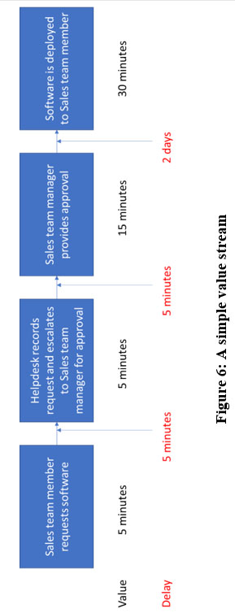

The four dimensions are:
The four dimensions are:CHAPTER 5: THE FOUR DIMENSIONS OF SERVICE MANAGEMENT
The four dimensions are:
•Organisations and people
•Information and technology
•Partners and suppliers
•Value streams and processes
The four dimensions of service management are relevant to all elements of the Service Value System (see chapter 6). Failing to consider all four dimensions can lead to services that offer poor quality or efficiency, or may even mean services aren’t delivered at all. The four dimensions can overlap and interact in unpredictable ways and must be considered for every service. Figure 4 shows the four dimensions:

The factors on the edge of the figure can all affect or constrain any of the four dimensions. For example, legal factors might limit in which country an organisation can store information. Any factor can affect any dimension. The factors are based on PESTEL (or PESTLE), a framework used to assess macro-environmental factors.
PESTEL is often used within business analysis, and assesses the environment an organisation, product or service is operating in and the impact it can have. PESTEL is described in more detail in Table 5.
4 ITIL® Foundation, ITIL 4 edition, figure 3.1.
Table 5: PESTEL
| Political | How might political or government actions affect an organisation, product or service? For example, consider the impact of legislation on organisations like Uber and Airbnb. |
| Economic | Will national or global economic performance affect a product, service or organisation? For example, a recession might mean that consumers are less willing to purchase some types of service. |
| Social | What is the social environment of the market? Do cultural trends have any impact? For example, seasonal events like religious and public holidays. |
| Technological | Are there any innovations in technology that could have an impact? Many new technologies such as artificial intelligence, robotic process automation, etc. have yet to reach their full potential. |
| Environmental | These factors can include climate, weather, geographical location, etc. For example, a mild winter might leave a clothes retailer with large numbers of unsold coats. |
| Legal | What legislation and regulations affect an organisation, product or service? What policies does an organisation have internally? This can include areas like health and safety legislation. |
Not considering any of the four dimensions can lead to reduced value or no value at all. For example, an organisation might focus too much on technology and neglect the people who are going to use it, leading to no value being delivered.
Dimension 1: Organizations & people
“The complexity of organizations is growing, and it is important to ensure that the way an organization is structured and managed, as well as its roles, responsibilities, and systems of authority and communication, is well defined and supports its overall strategy and operating model.”
The scope of organisations and people include:
•Formal organisational structures
•Culture
•Required staffing and competencies (skills)
•Roles and responsibilities
Culture is an essential part of an organisation’s success or failure. Considerations include:
•Trust
•Transparency
•Collaboration and shared values
•Leaders who champion values
•Coordination
Some of the areas that organisations need to consider as part of this dimension include:
•Management and leadership styles
•Updating skills and competencies
•Communication and collaboration
•Broad knowledge plus deep specialisation
•Common objectives
•Breaking down silos
Organisational structure describes how roles and responsibilities are allocated and coordinated within an organisation: who does what, who reports to who, and how. Most organisations have adopted one of the following approaches to departmentalisation:
•Functional structure: activities are grouped by their skills, e.g. Sales, Customer Services or Finance.
•Divisional structure: activities are grouped by customer region, product or service, e.g. EMEA team, online banking versus retail banking, etc.
•Matrix structure: a combination of functional and divisional, e.g. a finance expert might work on an online banking project as an advisor.
Within the organisational structure, employees might also experience:
•Formal or informal management: how much of their role is governed by explicit rules and regulations?
•Centralised or decentralised management: what percentage of decisions are taken by a centralised team?
•Tall or flat structures: with more or fewer levels of management and hierarchy.
The type of structure an organisation adopts will depend on its environment, strategy, history, and more. There is no right or wrong structure, but it is important to ensure that it supports organisational objectives. For example, an organisation that wants to innovate quickly might struggle if it has a formal, centralised management structure. It will not be able to attract the type of employees it wants, and existing employees will find it hard to drive innovation because of the amount of approval needed for any new ideas or changes.
Dimension 2: Information & technology
“When applied to the Service Value System, the information and technology dimension includes the information and knowledge necessary for the management of services, as well as the technologies required. It also incorporates the relationships between different components of the Service Value System, such as the inputs and outputs of activities and practices.”
Organisations need to consider:
•What information is managed by the services?
•What supporting information and knowledge are needed to deliver and manage the services?
•How will the information and knowledge assets be protected, managed, archived and disposed of?
Technology that supports IT-enabled services includes:
•IT architecture
•Databases
•Blockchain
•Cognitive computing
•Applications (including mobile applications)
•Communication systems
•Artificial intelligence
•Cloud computing
Technology that supports ITSM includes:
•Workflow management
•Communication systems
•Inventory systems
•Mobile platforms
•Cloud solutions
•Knowledge bases
•Analytical tools
•Remote collaboration
•Artificial intelligence
•Machine learning
Many IT-enabled services rely on effective information management to deliver value (for example, customer loyalty schemes or Cloud storage for photos). Information management includes the areas shown in Table 6.
Table 6: Terms Related to Information Management
| Availability | “The ability of an IT service or other configuration item to perform its agreed function when required.” |
| Reliability | “The ability of a product, service or other configuration item to perform its intended function for a specified period of time or number of cycles.” |
| Accessibility | Accessibility includes making sure information is only available to those who should have access to it along with designing for all consumers, including those with disabilities. |
| Timeliness | Is information available at an appropriate or useful time? |
| Accuracy | Is information accurate? |
| Relevance | Is information relevant? |
‘Digital transformation’ is a term used to describe how information technology now underpins every area of business activity. Think about your own role (and, indeed, your personal life). How reliant are you on technology? As the importance of information technology grows, so do the risks associated with it. You’ve probably read news stories about organisations that have suffered a data or security breach. These cyber security incidents can have both financial and reputational consequences.
Dimension 3: Partners & suppliers
“The partners and suppliers dimension encompasses an organization’s relationships with other organizations that are involved in the design, development, deployment, delivery, support and/or continual improvement of services. It also incorporates contracts and other agreements between the organization and its partners or suppliers.”
The scope of the partners and suppliers dimension includes:
•Service provider/service consumer relationships;
•An organisation’s partner and supplier strategy;
•Factors that influence supplier strategies; and
•Service integration and management (SIAM).
Supplier and partner relationships range from simple, commodity services to complex partnerships with shared goals and risks. Very few organisations operate completely independently and use no services from other organisations.
| Service integration and management | As organisations rely on more and more suppliers, it can prove challenging to manage them, particularly when things go wrong. SIAM is a management methodology that uses a service integrator role to coordinate service relationships across all suppliers. Service integration and management might be carried out by staff within the organisation or by an external organisation. |
Figure 5 shows how the service integrator role sits between service provider organisations and the commissioning (customer) organisation.
5 SIAM Foundation Body of Knowledge ©, 2016, Scopism Limited.
Table 7 explains the factors that can affect an organisation’s supplier strategy.
Table 7: Factors Affecting Supplier Strategy
| Strategic focus | Some organisations value self-sufficiency, whereas others prefer to outsource non-core work. |
| Corporate culture | Cultural bias can influence sourcing decisions, perhaps based on previous bad experiences. |
| Resource scarcity | Some resources and skills are hard to find, forcing an organisation to source them externally. |
| Cost concerns | It may be cheaper to source services externally, e.g. using shared resources to provide 24x7 support. | Subject matter expertise | Suppliers can bring deep expertise that the organisation cannot build internally. | External constraints | Legislation and regulation can affect sourcing decisions. |
| Demand patterns | Organisations might use external suppliers to help them cope with spikes in demand, |
e.g. using seasonal staff to provide extra support during holiday periods.
The importance of external suppliers in service delivery affects the skills that an ITSM professional needs. Instead of creating a product or service, the ITSM professional might be involved with contract negotiation and agreement. Instead of carrying out activities, they might be overseeing a supplier and managing the ongoing relationship. Commercial issues are more likely to arise if suppliers are chosen and contracts agreed by a procurement team that has little or no contact with the product or service teams. A procurement team might be very price-driven, leading to a contract that delivers an unacceptable level of quality. ITSM professionals need to be able to work across silos to make sure the contracts agreed meet desired outcomes.
Dimension 4: Value streams & processes
“Applied to the organization and its Service Value System, the value streams and processes dimension is concerned with how the various parts of the organization work in an integrated and coordinated way to enable value creation through products and services. The dimension focuses on what activities the organization undertakes and how they are organized, as well as how the organization ensures that it is enabling value creation for all stakeholders efficiently and effectively.”
A value stream is “a series of steps an organization undertakes to create and deliver products and services to consumers”.
Value streams and processes define the activities, workflows, controls and procedures needed to achieve agreed objectives. The scope of this dimension includes:
•Activities the organisation undertakes;
•How activities are organised; and
•How value creation is ensured for all stakeholders efficiently and effectively.
An organisation needs to understand its value streams to improve its overall performance. Organisations will:
•Examine work and map value streams
•Analyse streams and steps to identify waste
•Eliminate waste
•Identify improvements
•Continually optimise value streams
Value stream mapping has many benefits. Without an understanding of its value streams, an organisation is unable to explain, measure or improve them.
One benefit of value stream mapping that achieves improvements quickly is the ability to identify bottlenecks; in other words, an activity, area or process that is impeding flow. We’ll use a simple value stream to illustrate this.
An organisation is mapping its value stream for the deployment of customer relationship management software to sales team members. Sales staff are complaining that the process is too slow and the delay is stopping them carrying out their roles effectively. The organisation decides to map the value stream and try to identify the bottlenecks. The steps it follows are to:
•Identify all the activities and steps in the process;
•Record the average time it takes to complete each step and the average wait time between each step;
•Map this on a simple diagram showing value add times (time to complete each step) and wait times between steps; and
•Identify the delays that can be reduced, perhaps using the longest delay or the one that is the simplest to fix.
The mapping activity produces the value stream shown in Figure 6.
Note where the longest delay is: between the approval and the deployment. Perhaps some automation could help here?
The key message for processes is:
“A process is a set of activities that transforms inputs into outputs. Processes describe what is done to accomplish an objective, and well-defined processes can improve productivity within and across organizations. They are usually detailed in procedures, which outline who is involved in the process, and work instructions, which explain how they are carried out.”
A process is a set of interrelated or interacting activities that transforms inputs into outputs. Processes are designed to accomplish a specific objective. Figure 7 shows a simple example:
The word ‘process’ has acquired some negative connotations within an IT environment. Within the DevOps community, previous versions of ITIL have sometimes been seen as bureaucratic, process-driven models that can impede flow and stop work getting done. Some organisations did treat ITIL v3 as a process ‘catalogue’ and made it their mission to implement the full set, exactly as described in the books.
It’s important to focus on having ‘just enough’ process to get the job done. Too much process can create barriers (and lead to people avoiding a process altogether), but having no process at all can lead to chaos. Each organisation needs to adopt and adapt processes to help it meet its own organisational goals, and review processes regularly to ensure they are still efficient and effective. The updates in the ITIL 4 guidance and the focus on practices aim to revise this perception.
Value streams and processes for products and services help define:
•What is the generic delivery model for the service, and how does the service work?
•What are the value streams involved in delivering the agreed outputs of the service?
•Who, or what, performs the required service actions?